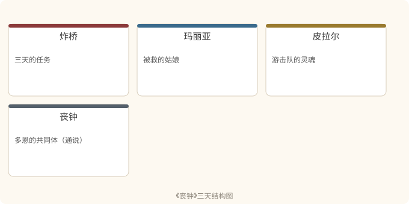

丧钟为谁而鸣
一、基本信息
| 作者 | 海明威 |
|---|---|
| 成书/出版 | 1940年（作者页 B051/B024 口径：丧钟为谁而鸣（1940）） Ernest Hemingway — Encyclopaedia Britannica（百科全书） |
| 国别/地区 | 美国 |
| 时代 | 现当代 · 20世纪 |
| 体裁 | 长篇小说 |
| 语言 | 英语 |

《丧钟》三天结构图（主题·结构图）
二、创作背景
作者页（B051/B024）：海明威 major_works 载'丧钟为谁而鸣（1940）'（作者页定位，详见 laorenhai 条核对）。
书名（通说待核）：出自约翰·多恩布道词'No man is an Iland'。
题材（通说待核）：西班牙内战中的美国志愿者乔丹炸桥的三天。
三、内容脉络
炸桥任务的三天：玛丽亚、游击队、背叛（通说待核）。
结尾：乔丹等待最后的机关枪——'丧钟'的自我完成（通说待核）。
四、主要人物表
| 人物 | 身份 | 说明 |
|---|---|---|
| 罗伯特·乔丹 | 爆破手 | （通说待核） |
| 玛丽亚 | 少女 | （通说待核） |
| 皮拉尔 | 游击队夫人 | （通说待核） |
五、主题与艺术特点
- 国际主义与死亡（通说）。
- 西班牙内战的史诗化（通说待核）。
- 多恩的钟声：人类共同体（书名通说待核）。
六、影响与评论
- 作者页：海明威代表作（B051/B024 作者页口径）。
Ernest Hemingway — Encyclopaedia Britannica（百科全书） - 普利策奖推荐被否（1941年——通说待核）。
Ernest Hemingway — Encyclopaedia Britannica（百科全书）
七、阅读建议
难点
- 西班牙内战史。
- 西班牙语插入语。
- 《丧钟为谁而鸣》（上海译文出版社，通说待核）。
- 英文原版。
海明威三连读之末。
八、待核实
- 1940年出版（Scribner说）核对。
- 乔丹/玛丽亚/皮拉尔人名核对。
- 多恩布道词出处核对。
本页主要来源
- Ernest Hemingway — Encyclopaedia Britannica（百科全书）
- The Old Man and the Sea — Encyclopaedia Britannica（百科全书）
海明威的其他收录作品：老人与海